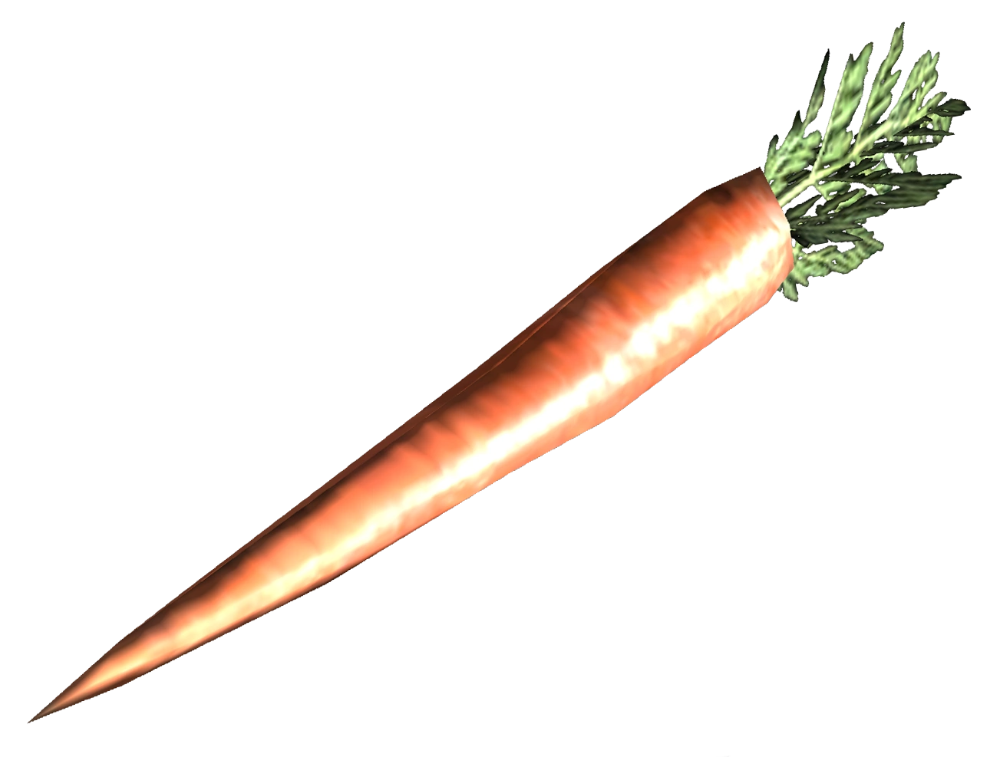
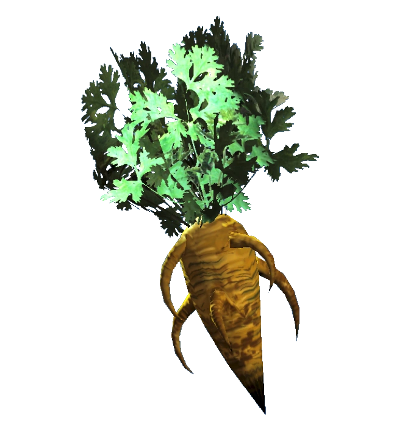
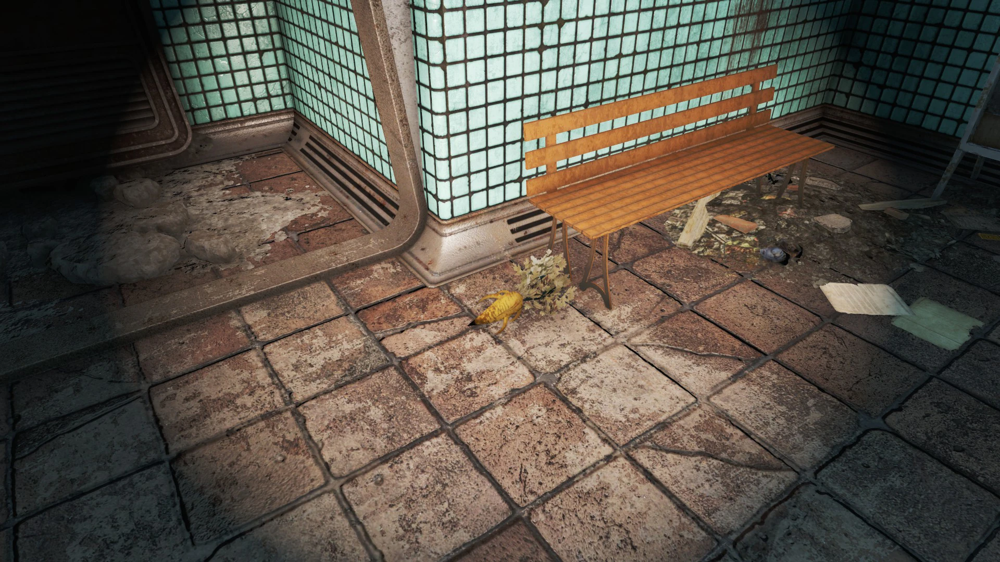

Carrot
ニンジン
概要
ニンジン（Carrot）は、Falloutシリーズに繰り返し登場する消費アイテムである。オレンジ色の根菜で、太い主根から分岐する根を持つ。
Fallout 4やFallout 76では入植地やC.A.M.P.に植えることもでき、食料生産の安定した供給源として優秀。
バリエーション
新鮮なニンジン（Fresh Carrot）


登場: Fallout 3 / Fallout: New Vegas / Fallout 4
他の一般的な果物や野菜と同様に、新鮮なニンジンは消費するとHPを回復できる。
ニンジン（Carrot） — Fallout 4
入植地にニンジンを植えると、1本あたり0.5の食料を生産する。プレイヤーは収穫して各種スープやその他の消費アイテムのクラフトに使用できる。農夫に設定した入植者1人で最大12本のニンジン（食料6.0相当）を管理できる。
サバイバルモードでは空腹ゲージを3ポイント減少させる。
効果: +10 HP（10秒間）/ +3 RAD
クラフト素材として
- イグアナスープ
- オレンジ・メンタス
- リススープ
- デスクローオムレツ
- 野菜スープ
- ヤオ・グアイロースト
- チキンヌードルスープ（Far Harbor）
- Vim Quartz（Far Harbor）
- ブラムコ・マッケンチーズ（フードプロセッサー）
入手場所（Fallout 4）
- コプリー駅 — 1個
- グレイガーデン温室 — 1鉢
- アウトポスト・ジモンジャ — 2株
- ザ・スログ — 21株
- ウエスト・エヴェレット邸 — テーブル上に1個
- Vault 81北の行商人小屋 — テーブル上に3個、鉢に4株
ニンジン（Carrot） — Fallout 76
アパラチア全域で栽培されているオレンジ色の根菜。生で食べると少量の空腹を満たすが、中程度の放射線と病気のリスクがある。調理すれば追加効果を得られる。
C.A.M.P.やワークショップに、ニンジン1個と肥料1個で植えることが可能。
| ステータス | 値 |
|---|---|
| 重量 | 0.25 |
| 価値 | 3 キャップ |
| 腐敗時間 | 75分（→ 腐った野菜に変化） |
| 変異効果 | 草食動物: 2倍 / 肉食動物: 無効 |
関連Perk
- Green Thumb — 収穫量増加
- Good with Salt — 腐敗速度低下
- Iron Stomach — 病気耐性
- Lead Belly — 放射線軽減
- Slow Metabolizer — 食事効果増加
- Thru-hiker — 食料重量軽減
クラフト素材として
- キャロットスープ
- チャリーのエサ
- マトンミートパイ
- オレンジ・メンタス
- 野菜メドレースープ
入手場所（Fallout 76）
- ジェネラルズ・ステーキハウスの庭 — 15個
- グローヴ家の山小屋 — 6個
- ウィクソン農場 — 4個
- ラレイ・クレイのバンカー — 鉢に1個
- イエロー・サンディーズ蒸留所とオータム・エーカー小屋の中間地点 — 5個
トリビア
- デルバート・ウィンターズは、ニンジンが戦後もメロンやゴードと並んで食べられる野菜であると言及している
- 削除されたVault 94の温室ターミナルエントリでは、ニンジンは学名「Daucus carota sativus」と記載されていた。これは現実のニンジンの学名と同じ
ギャラリー

登場作品
ニンジンはFallout 3、Fallout: New Vegas、Fallout 4、Fallout 76に登場する。
ニンジンは地味だけど、シリーズ全体を通じて出てくる安定した食料。Fallout 4では入植地の農業をやり始めると真っ先に植えるものの一つだし、76でもC.A.M.P.の畑に並びがち。
Vault 94の温室で正式な学名「Daucus carota sativus」が使われてたのは面白い。核戦争後も変異してない普通のニンジンって、そう考えるとレアなのかもしれない。
デルバート・ウィンターズが「まだ食べられる野菜」として挙げてるあたり、アパラチアの食文化において地味に重要な立ち位置にある。
This article was created by translating and editing Carrot, Carrot (Fallout 4), and Carrot (Fallout 76) from Nukapedia: The Fallout Wiki.
Licensed under the Creative Commons Attribution-Share Alike License (CC BY-SA 3.0).
© Overseer Mohi's Terminal — Fallout Lore Archive
コミュニティ維持のため、寄付を受け付けております。
> COMMENTS